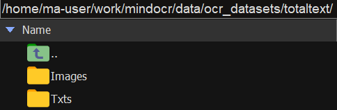
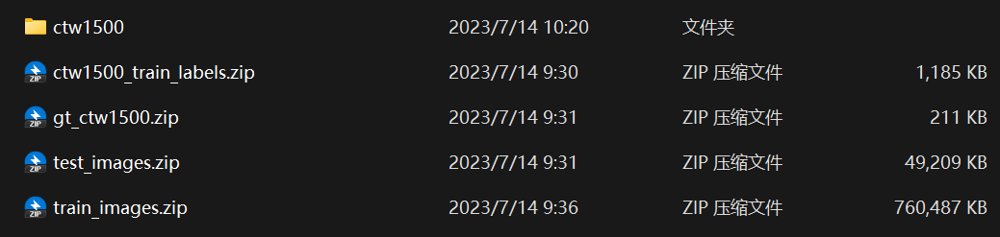
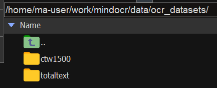
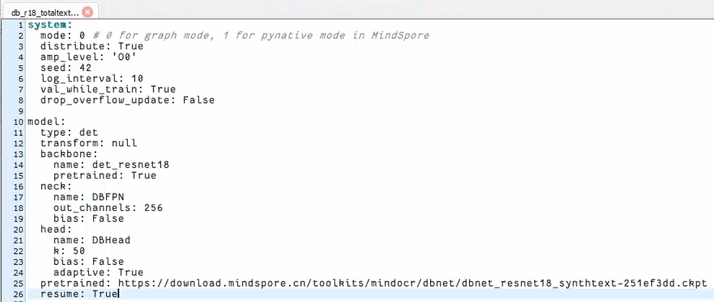
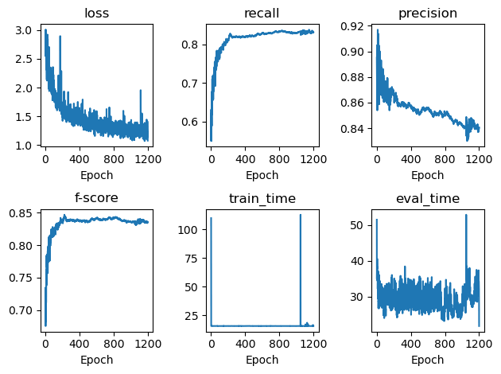
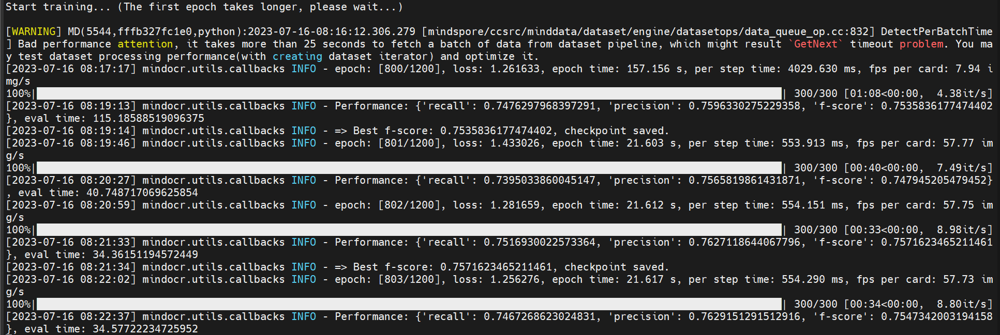
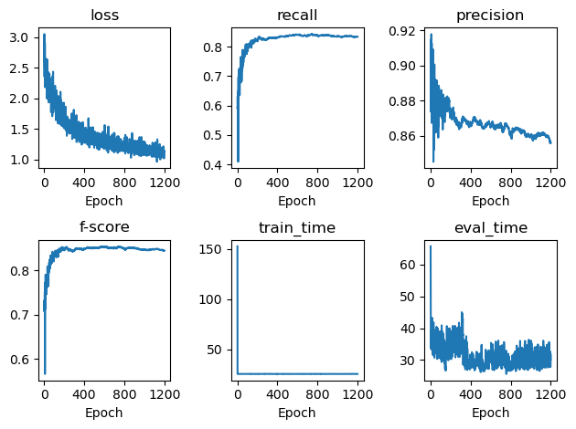
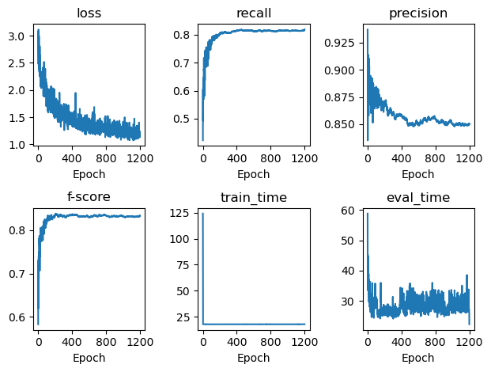
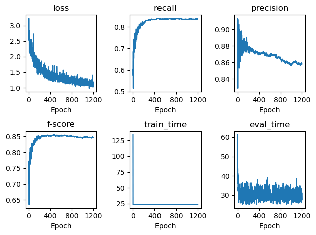

Server-MindOCR
目录
资源
DBNet和DBNet++：configs/det/dbnet/README_CN.md · MindSpore Lab/mindocr - Gitee.com
PSENet：configs/det/psenet/README_CN.md · MindSpore Lab/mindocr - Gitee.com
开跑
获取代码
电脑下从 mindocr: MindOCR is an open-source toolbox for OCR development and application based on MindSpore. It helps users to train and apply the best text detection and recognition models, such as DBNet/DBNet++ and CR (gitee.com) 下载得到 mindocr-main.zip，拷贝到服务器的 work/ 下。
解压。
|
将会解压得到 mindocr-main 文件夹，将其改名为 mindocr。
创建环境
从智算中心里整一个 mindspore:2.0.2-alpha 的镜像，打开它。
创建虚拟环境：
|
检查 MindSpore 是否可用：
|
|
安装环境
由于 lanms 安装方式有点坑，先装好：
|
在 requirements.txt 里把 lanms 这行删了。
work/ 目录下：
|
|
转换数据集
TotalText
Windows 下，分别从 图像 (size = 441Mb) 和 标注文件 (.txt格式) 下载 totaltext.zip 和 txt_format.zip。
解压这两个压缩包，将里面的文件组织成如下形式：
|
然后再打成压缩包 totaltext.zip，上传到服务器，解压至（unzip 命令）相应目录data/ocr_datasets/下：

返回 mindocr/ 目录，开始转换数据集：
- Train
|
|
- Test
|
|
这样就可得到预期格式的数据集：
|
CTW1500

|
将文件夹 ctw1500 重新打包成 ctw1500.zip，放到服务器中，解压出来：

mindocr/ 下执行转换命令：
- Train
|
- Test
|
训练
db_r18_totaltext（效果没有官网说的那么好但还是能用）（7.12-7.14）
先修改 config configs/det/dbnet/db_r18_totaltext.yaml 里的数据集路径（我本来不想修改的，结果发现它默认是个绝对路径且不在 work 中，那必须改了）
将 train: dataset: 和 test: dataset: 下的 dataset_root 调整为自己的数据集路径，我这里是：
|
单卡训练（成）
单卡训练（请确保 yaml 文件中的
distribute参数为 False。（emmmm 但好像 True 也不会影响。））
|
|
妈了个巴子，README.md 写的不清不楚的,终于能跑了。不过这个 first epoch takes longer 真的够 longer……
笑死大半夜实验室电脑寄了还让我学了怎么断点续训
训练到一半 Moba 居然还崩溃了？还得整个断点续训orz：docs/cn/tutorials/advanced_train.md · MindSpore Lab/mindocr - Gitee.com
往 db_r18_totaltext.yaml 里的 model: 下添加：
|

然后再：
|
会提示：
|
就可以继续了！
分析训练结果
最后结果：
|
从 tmp_dbt/ 中可以看到输出的结果，炼出的丹，日志信息等。
第 1110 个 epoch 的丹性能最好！
| Epoch | Loss | Recall | Precision | F-score |
|---|---|---|---|---|
| 1110 | 1.139845 | 83.43% | 84.73% | 84.08% |
emmmm 官网的最终效果为：
| 模型 | 环境配置 | 骨干网络 | 预训练数据集 | Recall | Precision | F-score | 训练时间 | 吞吐量 | 配置文件 | 模型权重下载 |
|---|---|---|---|---|---|---|---|---|---|---|
| DBNet | D910x1-MS2.0-G | ResNet-18 | SynthText | 83.66% | 87.65% | 85.61% | 12.9 s/epoch | 96.9 img/s | yaml | ckpt |
写一个 python 读取 result.log 并画出图表：
|

可以看到
- loss 逐渐下降
- recall 逐渐接近于 1
- precision 逐渐下降？这好吗（ChatGPT 说这是正常的）
在训练深度神经网络时，precision（精确度）和 f-score（F1 分数）是衡量分类模型性能的指标。
- 精确度（precision）是指被正确预测为正例的样本数占所有被预测为正例的样本数的比例。它衡量了模型在预测为正例时的准确性。
- F1 分数（F1-score）则是同时考虑了召回率（recall）和精确度的指标，它是精确度和召回率的调和平均值。F1 分数越接近于 1 表示模型在保持高精确度和高召回率方面表现良好。
当训练过程中，随着训练的进行，精确度下降但是 F1 分数逐渐趋近于 1 的情况是可能存在的，尤其是当模型更注重于增加召回率（即尽可能捕捉到更多的正例）时。这种情况通常发生在数据标签不平衡、类别不均衡或存在较高的假阳性或假阴性的情况下。
此时，模型可能会将更多的样本预测为正例，导致假阳性增加，从而降低了精确度。然而，由于模型的预测更加倾向于正例，它也能更好地捕捉到真正的正例，并提高召回率。因此，F1 分数可能会逐渐趋近于 1，指示模型在整体上仍然具有较好的分类性能。
需要注意的是，对于具体的问题和数据集，还需要根据具体情况进行分析和评估，以确定模型的性能是否符合预期要求。
f-score 逐渐接近于 1
一开始 train_time 就会很慢，执行到 1049 的时候重启训练耗费了好多时间 orz
原文中第 800 个 epoch 时的性能：
| Method | P | R | F |
|---|---|---|---|
| DB-ResNet-18 (800) | 88.3 | 77.9 | 82.8 |
查看 result.log 中第 800 个 epoch 时的性能：
| Method | P | R | F |
|---|---|---|---|
| DB-ResNet-18 (800) | 85.0 | 83.2 | 84.0 |
好家伙训练一个这玩意扣我 665 多块钱……
分布式训练（寄）
还得装 openmpi 4.0.3 (for distributed training/evaluation)
下载 https://download.open-mpi.org/release/open-mpi/v4.0/openmpi-4.0.3.tar.gz 拷贝到服务器中，然后一阵操作：
|
然后就会喜提安装失败。
找了工作人员，还没得到解决方案……
db_r18_ctw1500（能跑但是没有跑完）（7.14）
先修改 config configs/det/dbnet/db_r18_ctw1500.yaml 里的数据集路径：
将 train: dataset: 和 test: dataset: 下的 dataset_root 调整为自己的数据集路径：
|
开跑！
|
|
可是我想整个服务器后台执行，避免之前实验室电脑 Moba 大半夜掉线的尴尬：
|
最后一个“&”表示后台运行程序
“nohup” 表示程序不被挂起
- “python”表示执行 python 代码
- “-u”表示不启用缓存，实时输出打印信息到日志文件（如果不加 -u，则会导致日志文件不会实时刷新代码中的 print 函数的信息）
- “test.py”表示 python 的源代码文件（根据自己的文件修改）
- “test.log”表示输出的日志文件（自己修改，名字自定）
- “>”表示将打印信息重定向到日志文件
- “2>&1”表示将标准错误输出转变化标准输出，可以将错误信息也输出到日志文件中（0-> stdin, 1->stdout, 2->stderr）
最牛逼的伟哥提示道：
不过这种方法 你想中途终止的话 你只能用 kill 杀掉进程来解决了
不然只能等到运行结束
那么直接重启服务器也是可以的。
db++_r50_totaltext（魔改）
炼出了个不知道什么玩意儿（7.15-7.16）
原仓库没有这个选项，作死根据 db++_r50_icdar15.yaml 和 db_r50_totaltext.yaml 魔改成一个 db++_r50_totaltext.yaml，DB++ 与 DB 的区别就是
|
这两行的区别：
|
开跑！（魔改的后的 db++_r50_totaltext.yaml 放在了 test_dbnet/ 下）
|
|
笑死真的能跑。
7.16 结果到 800 个 epoch，需要评估的时候还是寄了。
|
断点重训又能跑了？好奇怪。
发现 F 分数好低，绝，感觉这个丹炼废了，Ctrl + Z，先搁置吧。

重跑（7.26）
试试直接给 db_r50_totaltext.yaml 里填上
|
开跑！
|
分析下结果：

最好的前 10 个模型：
|
这个算是性能最好的一个丹了。
原文中第 800 个 epoch 时的性能：
| Method | P | R | F |
|---|---|---|---|
| DB-ResNet-50++ (800) | 87.9 | 82.8 | 85.3 |
查看 result.log 中第 800 个 epoch 时的性能：
| Method | P | R | F |
|---|---|---|---|
| DB-ResNet-50++ (800) | 86.3 | 83.9 | 85.1 |
原文中第 1024 个 epoch 时的性能：
| Method | P | R | F |
|---|---|---|---|
| DB-ResNet-50++ (1024) | 88.5 | 82.0 | 85.1 |
查看 result.log 中第 1024 个 epoch 时的性能：
| Method | P | R | F |
|---|---|---|---|
| DB-ResNet-50++ (1024) | 85.8 | 83.4 | 84.6 |
db++_r18_totaltext（魔改）（7.16）
原仓库没有这个选项，试试直接给 db_r18_totaltext.yaml 里填上
|
开跑！
|
分析下结果：
|

统计下前 10 epoch 下的 F-score 值：
|
|
emmmm 虽然 loss 一直在下降，但是 F-score 很早就趋于稳定了。但是最终的训练结果还不如 db_r18_totaltext？什么鬼啊！
原文中第 800 个 epoch 时的性能：
| Method | P | R | F |
|---|---|---|---|
| DB-ResNet-18++ (800) | 84.3 | 81.0 | 82.6 |
查看 result.log 中第 800 个 epoch 时的性能：
| Method | P | R | F |
|---|---|---|---|
| DB-ResNet-18++ (800) | 85.6 | 81.4 | 83.4 |
原文中第 1024 个 epoch 时的性能：
| Method | P | R | F |
|---|---|---|---|
| DB-ResNet-18++ (1024) | 86.7 | 81.3 | 83.9 |
查看 result.log 中第 1024 个 epoch 时的性能：
| Method | P | R | F |
|---|---|---|---|
| DB-ResNet-18++ (1024) | 84.9 | 81.3 | 83.0 |
笑死，效果还不如第 800 个 epoch。
db_r50_totaltext（7.27）
|
分析下结果：

推理（7.26、7.29）
离线推理只能用于 昇腾310，但是服务器是 昇腾910，所以寄
折磨完华为工作人员后说可以使用在线推理，设置好 --image_dir、--det_algorithm、--det_model_dir，然后开跑！
但是发现这个推理只支持 resnet50？拉了。
居然只支持画矩形框？天呐。
Ground Truth
0999.jpg

- Ground Truth
|
官网模型
dbnet_resnet50_td500-0d12b5e8.ckpt
从官网下载的训练好的模型：configs/det/dbnet/README_CN.md · MindSpore Lab/mindocr - Gitee.com 里的 dbnet_resnet50_td500-0d12b5e8.ckpt：
|
|
会在 inference_results/ 里获得 0999_det_res.png 和 det_results.txt：
det_results.txt
|
0999_det_res.png

自己的丹
tmp_det_db_r50_totaltext/best.ckpt
|
det_results.txt
|
0999_det_res.png

居然差这么多……感觉参数不太一样……
tmp_det_db++_r50_totaltext/best.ckpt
|
det_results.txt
|
可用参数
查看 tools/infer/text/config.py ，有如下参数可用：
|